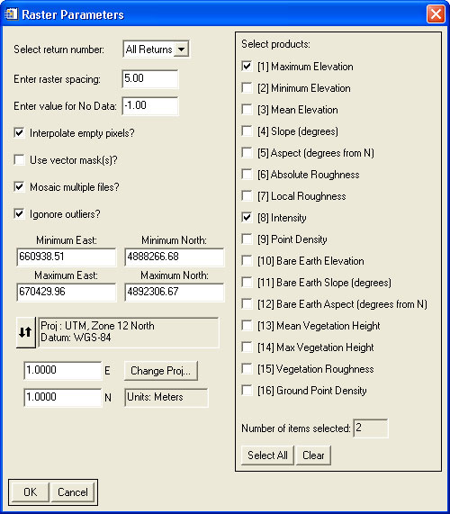

Using "Rasterize LiDAR Data"
This tool is meant to convert LiDAR point data into various raster products.
Usage:
- Select the input file(s) to rasterize. Multiple files may be selected to combine into a single raster or separate rasters.
- Select whether to use the first return, last return, or both.
- Input the raster pixel resolution. The units of this parameter are the same as the horizontal coordinates of the data.
- Enter the value for pixels where no data exists.
- If the "Interpolate data?" box is checked, the tool will interpolate gaps within the raster. However, the tool does not extrapolate outside the edges of the data.
- If the "Use vector mask(s)?" box is checked, the tool will prompt the user to select one or more EVF files. Pixels within these areas will not be processed.
- If the "Mosaic multiple files?" box is checked, then multiple input files will be combined into a single raster. If this box is not checked, and multiple input files are selected, a raster will be created for each input file.
- If the "Ignore outliers?" box is checked, then lidar points whose elevation is five or more standard deviations from the median will be ignored.
- Set the desired geographic extents of the output raster. The default values are the overall extents of the selected input file(s).
- If necessary, set the projection associated with the data.
- Select which products to display. These include:
- Maximum Elevation - The maximum elevation point within each pixel
- Minimum Elevation - The minimum elevation point within each pixel
- Mean Elevation - The mean of all elevation points within each pixel
- Slope - The average slope of all points within each pixel
- Aspect - The aspect of the average slope of all points within each pixel
- Absolute Roughness - The roughness (standard deviation) of all elevation points within each pixel
- Local Roughness - The roughness (standard deviation) of all elevation points within each pixel after the local slope has been removed (de-trended)
- Intensity - The mean intensity of all points within each pixel
- Point Density - The density of all points within each pixel
- The following products require the LiDAR data to have been processed through the height filtering:
- Bare Earth Elevation - The minimum bare earth elevation (data elevation minus vegetation height point within each pixel
- Bare Earth Slope - The average slope of all bare earth elevation points within each pixel
- Bare Earth Aspect - The aspect of the average slope of all bare earth elevation points within each pixel
- Mean Vegetation Height - The mean of all height points within each pixel
- Max Vegetation Height - The maximum of all height points within each pixel
- Vegetation Roughness - The roughness (standard deviation) of all height points within each pixel
- Ground Point Density - The density of ground points within each pixel
- Click "OK"
- Select the output file, or save to memory. (If multiple files are selected and the "Mosaic multiple files?" box is unchecked, the user will be prompted for an output directory instead.)
Back to LidarTools home page.
Notes:
- This tool requires data that are in the LAS format.
- The raster products are saved as one or more ENVI data files, with each product as an individual band. If a single file is processed, or multiple files mosaicked, the output file is immediately opened in an ENVI display window.
- If multiple input files are selected, this tool may leave artifacts along the seams of the input files. This is due to processing the input files individually and the resulting lack of points near at the seams.
Tip: If the input files overlap, then the output raster should be seamless. Use the buffering tool to create overlapping LAS files.
- This tool currently uses simple nearest neighbor-type interpolation, which may not be optimal in some cases.
Comments?
• Idaho State University • Boise Center Aerospace Laboratory • 322 E. Front Street #240 • Boise, Idaho • 83702 •